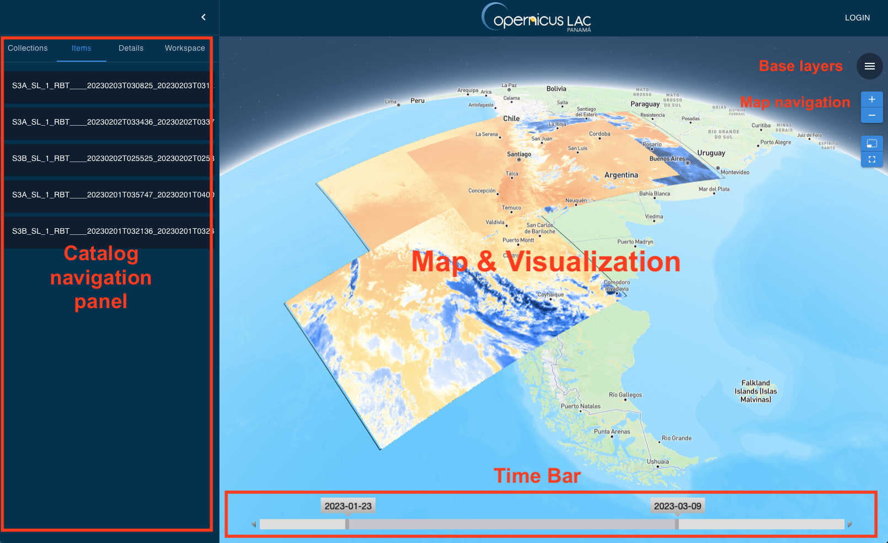

Graphical User Interface
Diseño de la interfaz gráfica del portal: área de búsqueda y resultados, barra de navegación, mapa, barra temporal, colecciones, procesamiento, capas base y búsqueda libre; más los filtros geográficos y de metadatos avanzados.
The platform is designed with a dual-interface approach to data discovery, ensuring that users have access to the data they need in a way that suits their preferences and technical proficiency. At the core of this approach is the integration of a user-friendly graphical user interface (GUI) along with existent APIs.

As seen in the diagram of the previous figure, the GUI is organised to provide an intuitive and navigable experience for all users, regardless of their technical background. It will be the visual gateway to the array of CopernicusLAC data, allowing users to search, view, and download datasets through a web-based portal. The design of the GUI will focus on ease of use, with clear categorizations, filters, and search capabilities that allow users to quickly find the data they require. It is here that users can benefit from a visual representation of search results, interact with maps, and understand the spatial and temporal context of the data before downloading or integrating it into their workflows.
The GUI for data discovery and visualisation system will reuse existing components to offer an intuitive and comprehensive experience for the user with the following components::
- Search & Results: This area is dedicated to allowing users to conduct searches using various criteria. Users can input keywords, use advanced filters, or navigate through pre-set categories to find the specific datasets they need. Once a search is initiated, this section will display the results in a clear and organised manner, enabling users to quickly identify the most relevant data.
- Navigation & Search Toolbar: Situated prominently, this toolbar provides the necessary tools to refine search results. It includes features for adjusting search parameters, zooming in and out of result sets, and selecting specific data entries for more detailed views.
- Map & Visualization: At the heart of the interface is a dynamic map that visualises the geographic distribution of search results. Users can interact with the map to explore different regions, zoom into areas of interest, and click on individual data
points to reveal more information. This visual context is crucial for users to understand the geographical relevance of the data they are examining.
- Time Bar: This interactive timeline allows users to filter search results based on temporal data. Users can slide through time, identify data availability in different periods, and select specific time frames to narrow down their search to the most pertinent datasets.
- Data Collections: This section of the interface presents a structured view of the various data collections available within the CopernicusLAC framework. Users can browse through different collections, understand the scope of each dataset, and choose collections that align with their needs.
- Processing: This dedicated space is where users can access tools and services to process the data they have discovered. It provides a direct link to the suite of processing services, enabling users to initiate various data processing jobs from the same interface.
- Base Layers: Here, users can toggle between different map base layers, allowing them to customise the map's appearance according to their preferences or specific requirements for the data they are working with.
- Free Text Search: A simple yet powerful feature, the free text search gives users the freedom to enter queries in their own words, enhancing the accessibility of the search functionality.
Each of these components is thoughtfully integrated into the GUI, ensuring that users have a productive experience from data discovery to data processing. The GUI is designed not only to be user-friendly but also powerful enough to handle complex searches and data visualisations, catering to a diverse range of user needs and skill levels.
The toolbar on the CopernicusLAC data discovery platform will be a central element designed to empower users with advanced filtering capabilities for their search experience. It's a versatile interface that allows users to narrow down collections of EO data to the most relevant datasets based on specific criteria. Here's a detailed overview:
- Filter Criteria: Located at the top of the left panel, the Filter Criteria section is designed for precision. Users can filter EO data based on parameters, including:
- Area of Interest (AOI): Users can define a geographic area for which they need data, which could range from a local region to a broad expanse.
- Satellite: This filter lets users select data from specific satellite missions, ensuring they get the precise type of data they need.
- Sensor Type: Different sensors provide different types of data. Users can select among various sensor types to match their application requirements.
- Date Range: By setting a start and end date, users can retrieve data from specific time periods when performing temporal analysis.
- Resolution: This allows the selection of data with the desired level of detail, which is especially important for applications requiring high-resolution imagery.
- Geographic Filters: These filters enable users to refine their search geographically on the map through intuitive tools:
- Pinpoint: For focusing on a single, specific location.
- Bounding Box: To create a rectangular search area that covers the region of interest.
- Polygons: Users can draw custom shapes to define their search areas with greater precision.
- Well Known Text (WKT): For users who prefer to input geographic data as text, the WKT format is supported, translating text to geometry.
- Geographic Names: A feature that turns location names into administrative boundary polygons, automatically defining an area of interest.
- Advanced Metadata Filters: For users with specific requirements, the toolbar provides filters that delve into the intricacies of metadata:
- Orbit and Track Number: Useful for identifying datasets from specific orbital paths or imaging sequences.
- Cloud Coverage: Essential for optical data, this filter helps avoid imagery with excessive cloud cover.
- Platform and Instrument Name: For those who need data from a specific platform or instrument, this filter ensures that only relevant datasets appear in the search results.
- Segregated Acquisition: An on/off toggle that helps users filter for datasets based on their acquisition mode, separating standard captures from those with unique parameters.
- Search Functionality: Beyond structured filters, the toolbar includes:
- Free Text Search: Where users can enter keywords or phrases related to their data needs, providing a more human-centric approach to data discovery.
The toolbar's interface is intuitive yet comprehensive, designed to cater to a diverse user base, from researchers and analysts to application developers and decision-makers. It ensures that all users, regardless of their technical expertise, can effectively harness the wealth of EO data available through the CopernicusLAC platform.